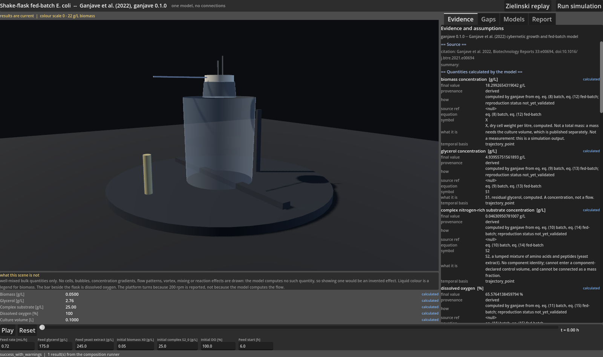
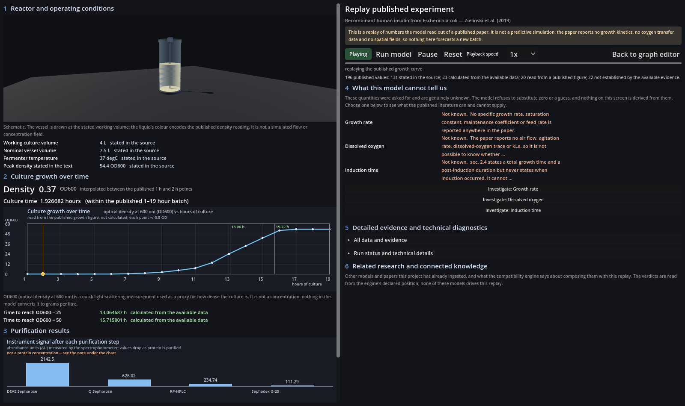
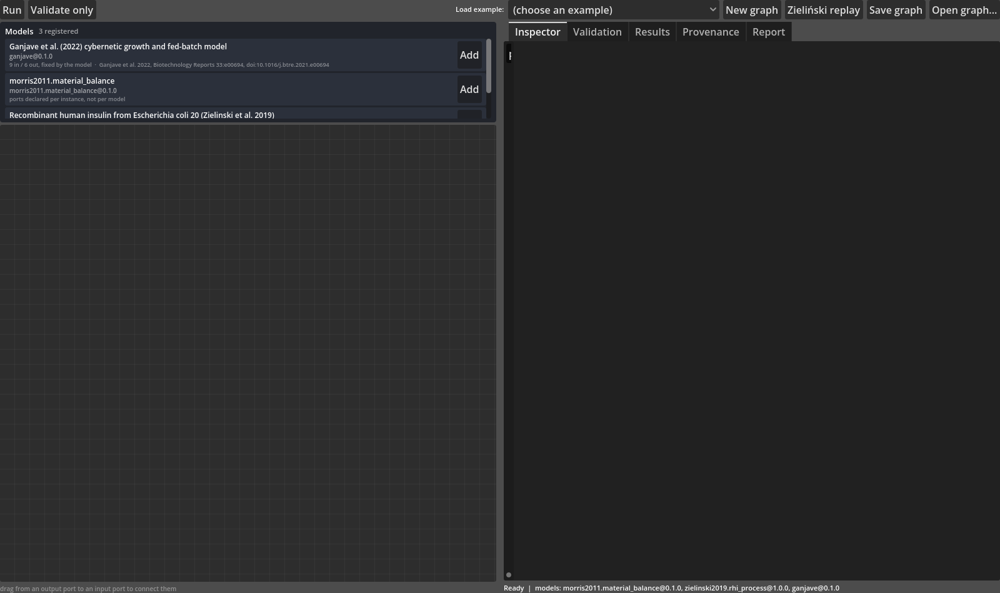

ScaleUp AI
Describe what you want to build. ScaleUp AI connects scientific and engineering knowledge to help construct executable models, explore how things work, and investigate what remains unknown.
An early-stage research prototype. The workshop vision is the destination; the current software demonstrates the first working pieces, not the whole journey.
A From an idea to something you can explore
A person should eventually be able to describe something they want to build and use ScaleUp AI to explore how it could work. The six stages below are a conceptual product workflow. Only the first working pieces exist today; the rest are the direction.
Start with something you want to make: an object, a material, a biological system, or a process.
Future capabilityFind relevant scientific and engineering knowledge across papers, equations, and experimental results.
Future capabilityTurn knowledge into structured computational models, with parameters, units, and assumptions recorded.
Current foundationReconcile interfaces, assumptions, units, and compatibility before separate models can be composed.
Future capabilityExecute compatible models and explore their behaviour under different conditions.
Future capabilityExamine limitations, alternatives, and unanswered questions rather than accepting a single answer.
Current foundationB What the system understands
Scientific knowledge is fragmented across papers, equations, experimental results, and specialist communities. Reusing it computationally requires more than summarising papers: relevant equations, variables, parameters, units, assumptions, evidence, and constraints must be extracted and represented in a structured form.
Equations, variables, parameters, and conditions must be pulled out of prose, tables, and figures — each with its unit and its source.
Reported facts and inferred quantities must stay distinct, so a value can be traced to the page and excerpt it came from.
Assumptions and uncertainty must be represented explicitly, not smoothed over to make the record look complete.
Units and model interfaces must be reconciled before separate models can be composed and executed together.
Whether evidence and models apply to the same system must be evaluated — a difference in strain or condition is a compatibility question, not an automatic disqualification.
Compatible models must be composed into larger simulations without losing their evidence, assumptions, or limitations.
C The working prototype
The demonstration below is captured from the ScaleUp AI Godot prototype: a desktop application that composes scientific process models through typed ports and runs them in dependency order, with a 3D evidence replay of the Zieliński et al. (2019) recombinant human insulin process.



Registered models (Zieliński insulin process, Ganjave, Morris material balance) are added from a palette and connected through typed, unit-aware ports. Required inputs have no defaults: a missing value blocks execution.
A graph can be validated into an execution plan, or executed. Cycles are rejected, and each model runs in its own interpreter subprocess because their packages cannot coexist.
The 3D replay restates numbers read from a published paper and the accounting identities it supports. It reports no growth kinetics, no oxygen-transfer data, no AU calibration and no purification model — and declares those absences explicitly.
Under each missing quantity an Investigate button opens a panel: the model and run it was checked against, the gap in the model's own words, candidate findings from the literature with verbatim quoted passages, a dimension-by-dimension condition comparison, a verdict (incompatible / needs checking / compatible but not yet validated), and ten checkable validation criteria.
A model registry records every model with a stable id, version, digests, ports and units. A compatibility engine assesses whether two models may be composed, with refused pairs reporting the specific difference and what would resolve it.
Every displayed value carries a plain-language provenance label: stated in the source, read from a published figure, calculated from the available data, or not established by the available evidence.
D A concrete example of scientific reasoning
The prototype above is built around a real paper about recombinant human insulin production in E. coli. It exposes missing dissolved-oxygen information, and shows how a potentially relevant finding from a different strain can be inspected without being automatically treated as transferable.
The paper reports agitation, aeration, dissolved-oxygen control, pressure, and exact feed profiles only partially — or not at all. The model records these as missing information rather than filling them in, so an engineer can see exactly what is unknown before attempting any prediction.
A finding reported for a different E. coli strain does not by itself prove evidence invalid. It introduces a compatibility question — same organism, different background — that must be evaluated before the evidence is reused.
Preserving evidence and surfacing unresolved questions is the value: the system reports what it does not know, so a human can decide whether a cross-strain result applies, instead of silently adopting it.
E Team
Listed by name and role only. Our credibility rests on the working prototype you can see above, not on unverifiable claims about individual backgrounds.
F Get in touch
We are building an interactive workshop that turns humanity's accumulated scientific and engineering knowledge into something people can use to explore how to make things. If you work on scientific computing, modelling, simulation, or bioprocess engineering, we want to hear from you.